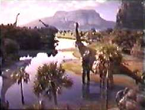
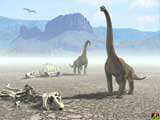

Hompejgji i Arbërit
Sëmundjet e Dinosaurëve
DINOARBI
Njohuri për dinosaurët
Teoria finale për zhdukjen e dinosaureve
Sëmundjet e dinosaureve
Vezet e dinosaureve
Tollovia te dinosauret
Dinosauret të cilet nuk i keni parë
Dinosaurët sundues
Gjera të mbetura nga kohet e dinosaureve
Është interesant fakti që sistemi i shërimit të trupit është më i dukshëm në dinosaurët mish-ngrënës sesa ata bimë-ngrënës. Ndoshta ngaqë mish-ngrënësit kanë qenë më të dhunshëm. Frakturat më të zakonshme janë gjetur nëpër gjymtyrë: një pjesë e mirë e skeleteve të Teropodve tregojnë dëmtime të tilla. Mendohet që këto fraktura janë shkaktuar gjatë gjuetisë ose dueleve me meshkuj të tjerë gjatë sezonit të shumimit. Disa dëmtime në skeletet e dinosaurve vejnë në dukje mënyrat se si këta luftonin. Për shembull, disa lloje dinosaurësh kanë brinjë të thyera në një mënyrë shumë të ngjashme me Bizontët e sotëm. Bizontët thyejnë brinjë kur sulmojnë njeri-tjetrin anash gjatë luftimit.
Përsa i përket sëmundjeve, është shumë e vështirë të thuhet me saktësi se çfarë sëmundjesh kanë pasur dinosaurët vetëm duke studjuar kockat e tyre. Sidoqoftë nga kockat mund të dallohen plagët të cilat kanë pasur infeksione të thella. Këto infeksione dallohen sepse kocka rritet në vendin që prek infeksioni. Por raste infeksionesh të tilla janë të rralla.
Duke u bazuar në studimet e bëra mbi krokodilët (kushërinjtë më të afërt të dinosaurve), është parë që krokodilët kanë një sistem imuniteti shumë të zhvilluar. Mendohet që edhe dinosaurët të kenë pasur një sistem të zhvilluar imuniteti ndaj sëmundjeve.
Shkenctarët mendonin se dinosaurët do të kenë vuajtur shumë nga arteriti, sidoqoftë, kjo është parë vetëm në skeletet e 2 Iguanodonëve, gjë që hedh poshtë përgjithësimin e mëparshëm mbi sëmundjen e arteritit. Gjithashtu janë zbuluar dy skelete Tiranosauresh të cilët mendohen të kenë vuajtur nga një sëmundje e shkaktuar nga konsumimi i tepërt i mishit. Duke marrë parasysh që Tiranosauri ka qenë predatori më i madh, mund të arrihet në konkluzionin që kjo sëmundje do të ketë qenë shumë e përhapur, sidoqoftë, nuk ka shumë fakte që mbështesin këtë hipotezë.
Prodhuar më;
1 janar 2003
Kontakto me mua në e-mailin tim:
kapreboys6@hotmail.com